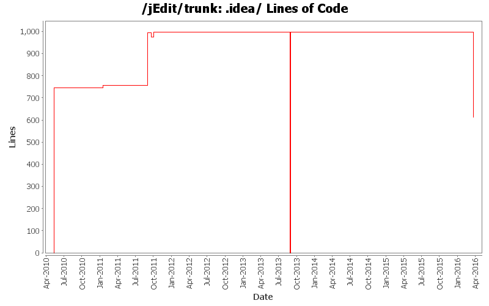

[root]/.idea
 copyright
(2 files, 26 lines)
copyright
(2 files, 26 lines)
 libraries
(3 files, 45 lines)
libraries
(3 files, 45 lines)
 runConfigurations
(6 files, 196 lines)
runConfigurations
(6 files, 196 lines)

| Author | Changes | Lines of Code | Lines per Change |
|---|---|---|---|
| Vampire0 | 44 (100.0%) | 2437 (100.0%) | 55.3 |
Revert accidental change
401 lines of code changed in 3 files:
Add missing source and target version to compile-installer task to not accidentally get an installer that needs a newer Java version than jEdit itself does
15 lines of code changed in 3 files:
reinstantiate trunk and branches
998 lines of code changed in 9 files:
put tombstone in place, official repository for jEdit core is now in Git
0 lines of code changed in 9 files:
project file update
22 lines of code changed in 1 file:
Rewrite the build system
- Use Ivy for retrieving almost all dependencies, making it possible to check out source and just do "ant" to build jEdit without the need of additional downloads or properties being set. Only for things that need to be installed, which is InnoSetup for building the windows installer and wine, if InnoSetup should be used on a system other than Windows, need to be installed and setup manually in build.properties.
- Use ant-contrib tasks for better readable and understandable build file and more performant builds with using contrib:runtarget where possible.
- Use Ivy to pull in bundled plugins from plugin central.
- Use saxon for documentation to be able to pull in a system independent XSLT processor with Ivy.
3 lines of code changed in 4 files:
Set up IntelliJ so that compilation from the IDE is possible without Ant but to the same directory, so that HotSwap can be used without the need to always restart jEdit. Also adding two new run configurations, one for collecting code coverage data, one for remote debugging without starting the debugee from IntelliJ
121 lines of code changed in 1 file:
Update project files
116 lines of code changed in 4 files:
more stuff for Java 5 -> Java 6 switch
1 lines of code changed in 1 file:
Fixed various indentation errors
15 lines of code changed in 1 file:
Converted the IDEA project file to the new directory based format and added workspace.xml, inspectionProfiles/ and dictionaries/ to svn:ignore
745 lines of code changed in 8 files: